The Homecoming
October/November 1995
SHUSWAP DIARY
Returning to the Ningunsaw Valley
by Deanna Kawatski
When Deanna Kawatski first wrote us in 1991 of her family's homesteading adventure in the Ningunsaw Valley of Northern British Columbia, the power and beauty of her narrative was apparent not only to us, but happily to the thousands of readers who asked for more and who made her MOTHER'S most popular contributor in years. At once naive and world-weary, Deanna’s story was filled with simple strengths. Paradise found was a hand-hewn log home built overlooking the Ningunsaw River and days filled with the endless chores of growing food, cutting fuel, raising two children on $2,000 a year...and reveling in a life of utter independence. But as it turned out, the adventure was just beginning. Her home was lost two years ago in the wake of her husband's departure, and in a moment her family was forced to move back to the civilization it had struggled for so long to be free of. Deanna's stories continued from her new suburban home, but the note of sadness and loss in them was unmistakable. With this, the concluding chapter of her most recent journey, Deanna finally returns to the home she left long ago, and begins the struggle to build again.
For nearly three years I was unable to return. Circumstances, cost, distance, and a deep sense of loss all conspired to keep me from visiting my old home in the Ningunsaw Valley. And I was scared. What would I have to face by going back there?
Fresh back from a library reading tour in the Kootenays, I was jolted by the phone call. The new owners revealed they were "out of here." Their offer was to sell the homestead back to me. I said, "I'm sure you must recognize how bizarre it is to be asked to buy my own place." "Yes, unfortunately there's a price tag attached to everything these days," came the terse reply. When Jay and 1 had been together, money never was the focus of our efforts and we lived on next to nothing. What an irony that now it should all boil down to dollars.
Scheduled to give workshops at a Young Author's Conference in 13 days, the trip north was nothing less than squeezed. The four of us, including Natalia, Ben, and my new partner, Eric, along with Charlie, the elegant sheltie, all crammed into our Toyota Tercel. As soon as we swung north of Kamloops, we seemed to immediately leave warm weather behind and enter the territory where seasonal awakenings come more slowly. We cut across country from Little Fort to 100 Mile House and encountered snowflakes flinging themselves against the windshield. The thought of my tulips at our new home lingered in my mind, transplanted from the Ningunsaw- bright flames that might well flare and fade before I got back. And Natalia had blessed me with yet another high school-hatched virus. We both had raw throats and swollen glands. Ben, in permanent jester hat, sat patiently counting his Pogs with as much relish as any king in his counting house. Nat, with her nose ring, made a habit of stealing Ben's bubble gum and bossing him incessantly.
Throughout the trip, I was well aware that I had a huge task ahead. It involved sorting through our old life, and making the major decision whether to take control of our old valley home again or to simply let it go. To say yes, without hesitation, would be ignoring the facts. That was then and this is now. What we had will never be re-created in quite the same way. But then again, the valley might speak to me as it did those many years ago when Jay and I first fell in love with the territory. No matter what the outcome, our home still did, in essence, own us and it was up to us to abide by her wishes.
I caught the enchantment on Nat's face the moment the magnificent mountains surrounding Smithers came into view. That afternoon, before swinging north at Kitwanga, we pulled in for gas, and who should veer in but the new owner on his way to the homestead to move his belongings out. He warned of the nasty bear he had encountered between the two hills on the valley descent. The bruin had actually swiped at his leg.
North of Meziadin Junction, the land was still lidded with a stubborn cap of snow. As we vibrated our way through a maze of clearcuts, I was tempted to apologize to Eric for the ugliness, to say "I knew it when," but what was the point? This was part of the Cassiar Forest District, which occupies one-sixth of the land mass of British Columbia. A mere 3,000 people reside in the entire region. It has become world famous for its wildlife populations of caribou, mountain goats, Dall's sheep, Stone sheep, grizzly, black bear, wolverine, and myriad other animals and plants. The forestry's present plan to increase the annual allowable cut by 6 to 10 times is both criminal and appalling. Where should I begin to apologize?
After the children and I moved, my husband Jay had stayed on for two years, then turned it over to the new family. They were on their way out after only eight months. What could force them out so soon?
At last I watched the lofty ridge of South Mountain come into view. We parked, loaded up our packs, and feeling weak from what I had decided was strep throat, I let the others rush ahead. It was nearly nine o'clock in the evening by the time I had toiled down the steep trail and stepped through the back door. As I stood on the floor that I had walked across thousands of times, I could not recognize my home. The house was as dim as a cave. No longer did it glisten with love and echo with children's voices. As though to make a mockery of our return, a tizzy of miserly Christmas tree lights was strung across a dusty ceiling beam. Below, piled dead center in the room, was a large mound of taped and labeled boxes. Great garlands of dust were draped from beam to beam and the house smelled dead and abandoned. Without lifeblood, it was a shell.
On the front porch, the plywood benches, painted a mud color since I left, sat empty. So often I had rested there in the evening and let the ivory-crowned mountain valley cradle me for a spell. To my left, a dead Christmas tree leaned in a white margarine bucket.
Outside the barn, I noticed with a pang that my oval flower bed was gone. Also gone was the graceful clutch of birch trees that had marked the point of land above the pond. I had leaned against their tattered bark often and once caught the sight of a great horned owl staring from one of the top branches. He observed me for over an hour. Later, on a walk out to the Ningunsaw River, we had been startled to find him lying dead on the trail. Jay had stuffed him and he had surveyed our main room ever since.
I walked back and perched on the back porch, where I noticed the little red wheelbarrow that Natalia's father had made her when she was two years old tipped over beside me. The bright red paint was nearly worn away and a substantial crack ran the length of it. The kick-sled on which we had glided down the sparkling river sat marooned on the grass close by. Descending a quick 40-foot decline, I caught my breath when I saw the pond. Three stout stumps poked above the once-deep water, in the stifling embrace of several feet of silt. Along the center ran a stranded stretch of grass-crazed land. Beyond was the frowzy brush island which was once the only protrusion. Behind me in a damp log building, the water wheel whirled on in ranting rhythm.
I rushed along toward the spillway where I saw Natalia running my way, sobbing her heart out "It looks so horrible!" she wailed. And so small. She had remembered it as a much larger place. Together we pushed on to the garden. Bands of tulips speared the soil here and there amongst the matted spread of grass, but the expanse on which we had once grown most of our food had gone untilled...for years it seemed. Ben burst through the fringe of alder and joined Natalia and me. As I embraced him his chest heaved with sobbing. Although what he wailed was, "My Archie comics are all gone!" I think what was hitting him full force for the first time was the loss of this life. I suspect that when we left, a light went out.
When I climbed the hill and reluctantly went back inside, I was amazed to find so much of myself strewn about the shambles of what had once been a warm and vibrant home. In the entryway, the herbs that I had dried still sat in gallon jars, opaque with time and neglect-dried parsley, oregano, zucchini, mint, sage, rose hips, and more. My fancy Findlay oval wood cookstove, in which I had baked scores of pies, cakes, batches of bread, muffins, and other delectables, was overgrown with a thick coat of dust and grime.
In the next room Ben recognized his solar-powered helicopter high on a shelf, while on the windowsill, a dusty wooden dancing man in red shirt and blue pants leaned a sharp left. His right leg was missing from the knee down. Buckets and boxes were stacked everywhere. Over the scene still stared the great horned owl, his expression holding no patience for the antics of human beings.
Upstairs I got my worst blow of all. What had once been my sanctuary was now unrecognizable. Cupboard doors were swung open and spewing mounds of clothing. It was impossible to cross the room without wading through them. Beneath a thick gray rind of dust, my books still lined the shelves. I had carted many of these volumes halfway around the world and back and they had become as firmly planted in the Ningunsaw Valley as I myself had been. Even now after nearly three years, the act of taking my personal belongings seemed somehow a sacrilege. I had poured so many years into this home that the retrieving of any item felt like the desecration of a monument. Yet there was a substantial leak in this ship, and I had better start plucking what I wanted from the water.
The next morning I awoke to the sound of a red-breasted sapsucker drumming on the house while the plaintive two-note piping of a varied thrush gently woke the woods to another day. And we had so little time. A mere five days was not long enough to restore order to our old home. However, some things I couldn't stand for more than a day. My kitchen window, which I used to define as framed with sunshine because of its coat of yellow paint, looked sadly myopic with its plug of spattered plastic. All of it, including sill and wing windows, was filthy. Once Eric had maneuvered the plastic frame out of its hold and I had mixed up water and vinegar, I began, just as in the past, to wash the window, sensing at my shoulder the arrival of a red rufous, hovering like a beggar beside the feeder.
Upstairs, Natalia and Ben dove into action, rummaging through the ruins of their former life looking for treasures. Nat had remembered vividly some of the clothing I had left behind, including a tiger-striped skirt and wide cape purchased in Edinburgh. With delight she discovered a beige shawl I had crocheted in Paris and the antique eyelet lace blouse I had bought there. She waltzed down the stairs wearing the hooded monk dress I had bought and worn in Israel. Natalia and Ben both poked their heads out of the tiny attic window and waved hello to Eric and me, standing far below beside the woodshed. Ben sported a paisley shirt and vest that had once belonged to his dad. He said all he needed now was a tie and decent suit jacket and his outfit would be complete.
Despite the dismay over the state of our old home, many small surprises shone forth from the rubble. I found a few surviving pansies in the garden. Natalia lit on a folder of drawings I had saved from her earliest years. And for two consecutive nights we stepped out into the yard and saw the pulsing of northern lights. It was more like a prelude than a full dancing display, but it helped me recall some of the magic of this valley.
On the back shelf I found a final jar of "Fritz's leg" that I had canned, from the gift of a hind quarter of moose meat given to us by a friend of the same name. I scrounged enough garlic dregs from a shriveled tangle to accompany it. As the four of us sat around the scruffier pine table with a candle glowing in the middle, eating plump plates of potatoes, carrots, and moose, it all seemed like a dream.
The surprises continued that night when Natalia and I were standing on the front porch. It must have been at least eleven because darkness didn't descend until after ten. Waving the flashlight in an arc across the clearing, Nat said, "Let's see if we can find any eyes." At first it revealed only darkened garden meadow. Then eerily, in the far west corner, past the untended rows of strawberries, the light ignited two fluorescent globes. "Maybe it's Pippin," Nat breathed. She had missed her pet, and a photo of the feral cat had been tacked on our wall at Shuswap Lake ever since we moved there in 1992. In unison we began to call her. The glowing eyes traveled closer, hesitated, then continued towards us. We still couldn't make out a body, but the eyes coursed up the hill through the old barn site, past our outhouse, and up the ramp. Natalia held her breath as at last we caught sight of Pippin's fuzzy form. After almost three years it was like an apparition to see Nat's pet dance toward us. As she advanced to the top of the ramp the light caught the essence of bush cat, and in the eyes, the touch of wildness which had sustained her. Just when Nat bent down to pet her, Pippin turned and dashed down the hillside. "Cats don't remember people anyway," she moaned.
Happily, the next morning Natalia discovered that sitting still and letting Pippin make the advances was the best strategy. At last she gratefully scooped her up and hugged her. Apart from the white bib, Pippin had the eyes and coloring of an owl. A robust bush cat, she was also as soft as a lynx. Random squirrel tails on the path and the screams of an unfortunate red-breasted sapsucker attested to the fact that she could look after herself. Without a doubt, she would travel south to Shuswap with us.
What a treat it was to be, once again, far away from traffic and telephones. As I rested on the front porch, a robin chirped persistently from the alder thicket bordering Natty Creek while a winter wren delivered an elaborate solo. This was the fourteenth spring I had welcomed to the Ningunsaw. And what did the valley have to say to me? At first, nothing. Then the slow glowing awareness that I was ready to reclaim what I had never truly given away. It would mean much negotiation. We would need to find renters, but we also needed to be able to return.
On our final pack-laden ascent up the brutal hill, I spied the early arrival of the Calypso bulbosa. It had been an annual ritual for us to greet the delicate purple, yellow, and white lady's slippers. As always, I knelt and inhaled the rich fragrance. Puffing, Nat packed a bulging bag of clothing plus Pippin in a wooden cage. Ben lugged a giant bag full of his freshly found Archies . Our burdens were lightened by the understanding that if justice was to play any kind of prominent role, then the homestead would be returned to us. It would be a long road.
|
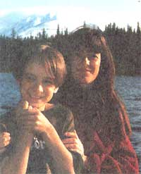 Ben and I in front of Bob Quinn Lake. |
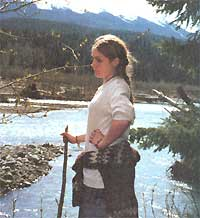 Natalia looking pensive besidethe Ningusaw river now |
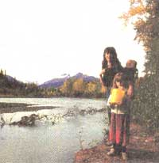 PAUL BAILEY |
 The log cabin now and then |
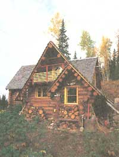 Ben beside the stump house next to a once thriving garden. |
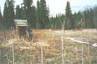 The garden in its prime.PHOTOS BY PAUL BAILEY |
|
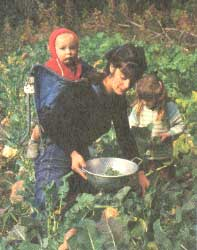 Hand-cut wheat drying in the old barn. |
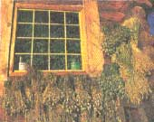 Gathering the evening's supper from the root cellar. PHOTOS BY PAUL BAILEY |
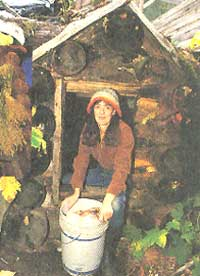 PHOTOS BY PAUL BAILEY |
|
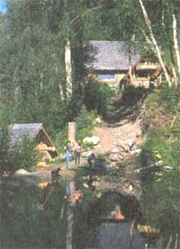 Ben and Natalia on the trail leading to thepond. |
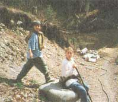 Abandoned cars in the Nechako River at Vanderhoof. |
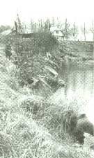 |